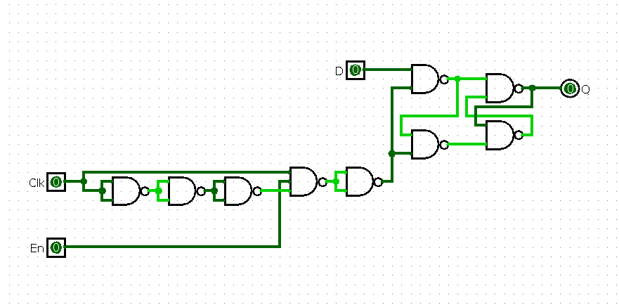
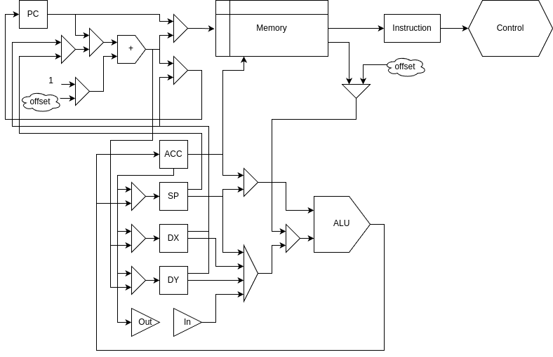
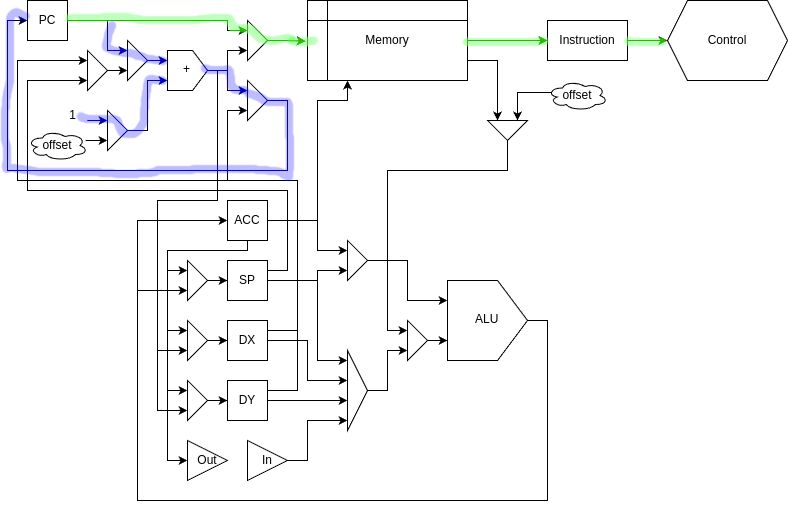
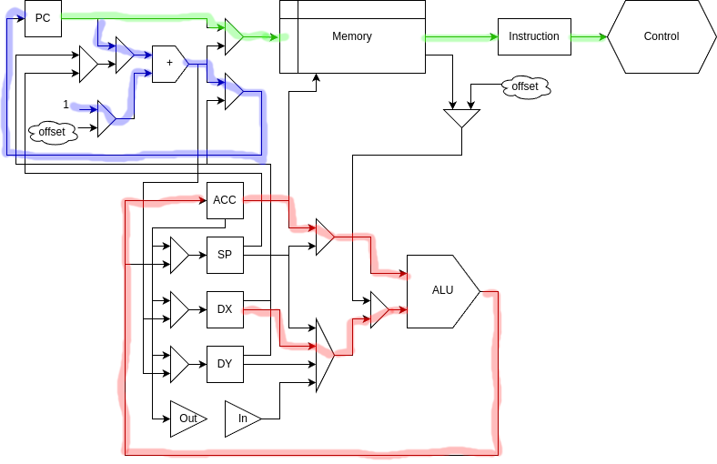
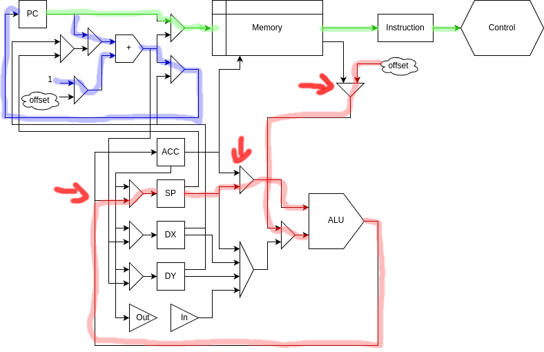

NANDy
Some time ago, I was idly playing around with digital logic and remembered something that seemed to be part of every piece of computer-engineering educational material: you can make any logical device out of NAND gates. (As an aside, NOR gates can do the same thing; I don't know why they don't get talked about as much. Heck, a computer made entirely out of NOR gates landed us on the moon.)
I decided to take a look at what it would take to implement an entire basic CPU using only standard off-the-shelf NAND gates. It turns out, this is a very bad idea.
Before we get too far into the weeds, I set some general ground rules and goals for this project:
- The CPU itself will be entirely NAND gates. That's kind of the whole point of the project.
- Any part which is strictly a NAND gate is permitted. This includes gates with any number of input pins as well as open-collector and other gate types. Schmitt-trigger gates are an interesting gray area, since they technically contain memory elements and therefore could be considered not just gates, but I don't plan to use any anyway, so it doesn't really matter.
- Parts that are not the CPU are not restricted to NAND gates. I briefly considered building RAM and ROM out of gates, but it gets extremely tedious extremely quickly for any useful amount of storage. Additionally, clock generators and other support components can be built however I like. However, I won't push this limit; integrated memory chips will be used only for things that are fundamentally memory, and not dubious cases like microcode ROMs.
- Peripheral devices don't have to be NAND gates, but it's more fun if they are. My general game plan is to implement these parts on an FPGA and then transfer them to dedicated ICs if they're simple enough.
Basics
Our building block for the project, for the most part, is going to be this:

This is about the most standard NAND gate you can get. It's a 4-module, 2-input CMOS gate compatible with 5V logic levels; the AC in the part number indicates that it's fairly fast, and most importantly it is very inexpensive in decent quantities.
As the theorem states, we can build any combinational logic we want out of these. Here's an XOR gate and a 1-bit full adder:

Building elements that have memory is a bit trickier, and a bit less elegant. Because memory elements tend to depend on themselves, they don't lend themselves well to concise mathematical representations, instead relying on timing and implementation details. Latches - components that allow their contents to change continuously whenever their clock signal is high - aren't too bad:

Flip-flops - elements that can instantaneously sample a signal on the rising or falling edge of the clock - are a bit more difficult. While it's possible to build a functioning CPU without these components, it's a bit more difficult; generally, it requires a two-phase clock or other similar strategy.
Wikipedia gives an example of a D flip-flop that looks like this:
By Nolanjshettle at English Wikipedia, CC BY-SA 3.0, https://commons.wikimedia.org/w/index.php?curid=40852354
This design works great - and I originally planned to use it, and even got as far as prototyping some components using it - but it's not actually that useful for my purposes. The main issue is that it doesn't have a write-enable input, so retaining a value for more than one clock cycle requires either multiplexing the output back into the input or doing a significant amount of tearing-apart of the internal logic, either of which adds a lot of component cost. Instead, I went with a design that looks like this:

This is, to be brutally honest, a fairly ugly solution. You may notice that it's just a D latch as above, but with a weird piece of combinational logic for the write signal; this logic computes the expression (CLK and not (not (not CLK))), which is almost always 0. When clock gate switches high, it takes about 30 nanoseconds for the signal to propagate through all of those inverters, so as long as the input doesn't change for those 30 nanoseconds it'll write correctly. There's nothing else in the computer that's remotely that fast, so this works great. An added bonus is that the edge-detector structure can be shared across all the bits of the same register, so it only has to be implemented once instead of 8 times; technically, only one edge detector is needed for the whole computer, but I figured relying on a high-speed pulse like that to stay intact across that distance was asking for trouble, so one per register it is.
The Architecture
For the architecture of this CPU, I went through quite a few iterations before settling on a final design - in my own notes, the current design is referred to as "architecture 4.5." The design takes a lot of impsiration from the MOS 6502, with an X and Y index register, accumulator, and 256-byte stack. However, compared to other 8-bit-era processors, it's a lot more RISC-ish: no indirect arithmetic operations, only separate loads and stores.
The core specs of the machine currently look something like this:
- 1 MHz processor clock
- 32KB ROM, 32KB RAM (256 bytes usable as stack)
- 1 hardware interrupt
- Function calling with reentrancy and recursion (at least until you run out of stack)
- Power consumption: about 10 watts projected (mostly LEDs)
To help ease the pain of having so few registers, there are also a collection of
swap instructions, which instantaneously exchange any register with the
accumulator. Then, instead of the 6502's inx to increment X, we do
sw x; addi 1; sw x. The main motivation for this increase in code complexity
was to reduce the number of states required for instruction execution; no
instruction takes more than 2 cycles, and a large quantity (basically, anything
that doesn't require extra memory accesses) only requires one.
The one exception to the "arithmetic only happens on the accumulator" rule is
the increment-stack-pointer operation. This is because the processor supports
interrupts for I/O, and interrupts assume the stack to be in good working order;
to implement isp from swaps would have to take up 5 instructions:
dint # Disable interrupts
sw sp
addi -3
sw sp
eint # Enable interrupts
That's not even to mention that you might want to increment the stack pointer when interrupts were already disabled, so it can't even be made into a nice handy macro. With the way the cost and complexity of this project have gradually expanded, part of me still thinks it would have been worth doing, but at this stage it's not really something I want to mess with.
One place I did accept a bit of clunkiness to reduce the instruction set was in procedure calls. NANDy supports relative jumps - i.e. "go to 327 bytes after the current instruction" - both with and without boolean conditions, but procedure calls - i.e. "go to this location, and store my previous location for future use" - must be done by loading the X and Y registers with an exact address:
wr dy # Stash current accumulator value in Y register
rdi 0x12 # Load lower byte of function address
wr dx # Put it in lower index register
rdi 0x34 # Load upper byte of function address
sw dy # Put it in upper index register, and at the same time get our original
# accumulator value back
jar # Jump to function
Luckily, since this is all register-juggling and doesn't use the stack, it can be neatly wrapped up in a macro:
call func
The Datapath
After a large amount of iteration and rearranging, I ended up with a datapath that looks something like this:

This is somehow simultaneously a bit of a rat's nest and restrictively simple. Let's take a look at how a few relevant instructions pass through the datapath:
The simplest thing that it's possible to do on the processor is a no-operation,
abbreviated nop. On a CPU, the task of "doing nothing" typically entails two
steps: loading the nop instruction itself from memory, and incrementing the
program counter to point to the next instruction. In the NANDy datapath, those
steps occur via the green and blue paths here respectively:

This same fetch-and-advance structure is present in almost all instructions. For example, adding the X register to the accumulator looks like this, with the actual operation occurring via the red path:

By looking at the datapath here, we can see why I was a little salty about not
being able to easily replace the separate isp operator with other operations.
There are three whole multiplexers here whose sole job is to implement the isp
operation. Yuck. Who knows, I may end up going to the manual solution that I
said was too complex originally after all.

The I/O Dilemma
Originally, I designed the processor around a single 8-bit input-output port. This made a lot of sense when I first started developing the project; originally I had planned for the processor to be a lot more primitive, with only one index register instead of two and only 256 bytes of RAM. However, feature-creep got the best of me, and I ended up designing something that might be capable of more complex tasks, which necessitated more complex I/O.
This left me at a bit of a dilemma: I had already designed the instruction set to support only a single I/O port, but for most of the end goals I had for this architecture, I would need more ports. The options I considered were:
- Keep the I/O design exactly as is, and require every I/O request to contain a prefix indicating the device to target and possibly how many bytes to send to that device.
- Keep the I/O design exactly as is, and consider each I/O request to be a 4-bit address followed by a 4-bit data value, or some other similar split.
- Add a single-bit chip-select output that is controlled by dedicated instructions; when chip-select is active, I/O writes set the device address to be used in the next operation.
- Keep the I/O design mostly as is, but reuse one of the index registers as an I/O address register.
- Ditch the I/O register entirely, and make I/O either part of the memory space (a la 6502) or its own pseudo-memory space (a la Z80).
I fairly quickly narrowed down the options to 3, 4, and 5; most of the devices I want to use take an 8-bit input, and having the external logic to distinguish prefixes from device data would add a whole lot of complexity that I don't want to deal with.
Picking a Goal
As the feature creep started to build up on this project, I realized I really needed to settle on a goal to keep this from dragging on forever. Originally, I had planned on trying to make it play Tetris, but I eventually decided against that, mostly for interfacing reasons - either I'd need a full-featured graphical output, which would be expensive and complicated, or I'd need to build a specific made-for-purpose Tetris board display, which wouldn't be very interesting. I also considered a couple other options:
- IRC client via old-school serial modem - requires learning a lot of different protocols, and networking things never work
- Scientific calculator - requires floating-point and/or high-precision math
- Lisp interpreter - this one is pretty plausible; the only limitation is that deep recursion requires some extra thought when you only have 256 bytes of stack
- Full-fledged DOS-style prompt - this would be a lot of fun, but also a lot of added scope
In the end, the thing that convinced me was someone recommending that I try the classic text adventure Planetfall. Planetfall and the other Infocom games are especially interesting in that they may be the first games written using an engine and virtual machine, rather than direcly to assembly. Infocom games were written in a human-readable, Lisp-like language called ZIL, then compiled to a virtual-machine bytecode called Z-Machine. This means that any computer that can interpret Z-Machine bytecode can in theory run any Infocom game. Being a text adventure, I/O can just be a serial port, and the command set was simple enough to implement on 8-bit computers of the time like the Atari and Commodore 64. Perfect for my minimal CPU!
Back to Top